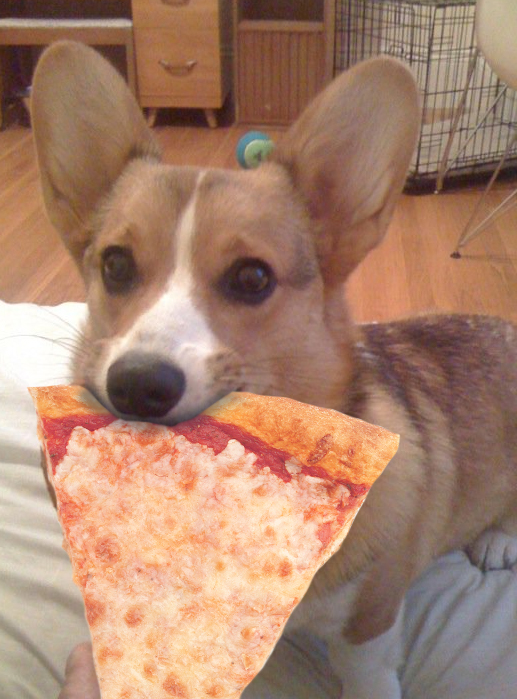

Feeding
Recommended daily amount: 3/4 to 1.5 cups of high-quality dry food a day, divided into two meals.
Note: How much your adult dog eats depends on his size, age, build, metabolism, and activity level. Dogs are individuals, just like people, and they don't all need the same amount of food. It almost goes without saying that a highly active dog will need more than a couch potato dog. The quality of dog food you buy also makes a difference — the better the dog food, the further it will go toward nourishing your dog and the less of it you'll need to shake into your dog's bowl.
Pembrokes like to eat, and will over-indulge if given the chance. Keep your Pem in good shape by measuring his food and feeding him twice a day rather than leaving food out all the time. If you're unsure whether he's overweight, give him the eye test and the hands-on test.
First, look down at him. You should be able to see a waist. Then place your hands on his back, thumbs along the spine, with the fingers spread downward. You should be able to feel but not see his ribs without having to press hard. If you can't, he needs less food and more exercise.